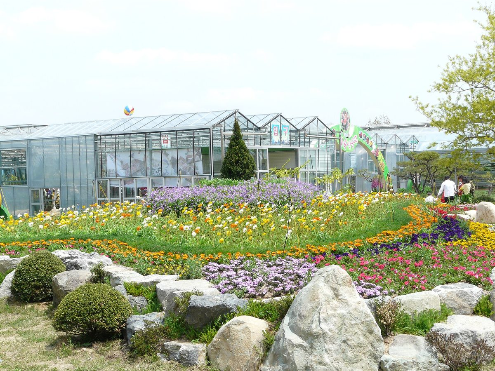

함평군, 군 주도 계획입지로 연 2TWh 재생에너지 공급 구상…사업자 선정 때 가격과 함께 주민소득계획 반영

영농형 500MW·일반 400MW·건물 100MW에 인접 지역 500MW 공급계약 검토…부지·인허가·계통·주민협의 군이 먼저 준비하고 영농형 수익공유 모델 마련, 주민 지분·평가 비중은 공개 안 돼
전남광주통합특별시 함평군이 발전 부지 확보와 재생에너지 지구 지정, 인허가, 계통연계, 주민협의를 군이 먼저 준비하는 '계획입지' 방식으로 기업에 연간 2TWh의 재생에너지를 공급하겠다는 구상을 내놓았다. 이남오 함평군수는 28일 재생E 매칭포럼 발표에서, 민간사업자가 부지 발굴부터 주민협의까지 혼자 떠안던 방식을 바꾸고 전력 공급가격 경쟁입찰로 사업자를 고르되 가격과 함께 사업이행능력과 주민소득계획도 반영하겠다고 밝혔다. 군은 영농형 태양광을 적극 추진하면서 농업인과 임차인, 지역주민이 공정하게 참여하는 수익공유 모델을 마련하고, 발전수입을 농가소득으로 잇는 한편 운영·관리 일자리도 함께 설계할 계획이다. 공급 구상은 군내 영농형 태양광 500MW, 일반 태양광 400MW, 건물·주택 태양광 100MW에 인접 지역 재생에너지 500MW를 공급계약으로 잇는 방안을 더한 것으로, 군은 기업 수요와 계통 여건, 계약 가능 물량을 확인해 단계적으로 구체화한다는 방침이다. 군은 이미 군 계획 조례의 발전시설 허가기준을 고쳐 이격거리 규제를 없앴고, 부지조성·도로·배수·조경 시설을 일률적으로 요구하던 관행도 현장 여건에 따라 판단해 공사비와 간접비를 줄여 보조금 없이 최소한 산업용 전기요금 이하로 빛그린 국가산단 등의 RE100 기업에 전기를 대겠다고 했다. 다만 이날 발표에서 사업비와 부지 면적, 주민 지분율, 주민소득계획이 입찰 평가에서 차지할 비중은 공개되지 않았다.
시민에너지 관점
군이 부지와 인허가, 주민협의를 먼저 맡고 입찰 기준에 주민소득계획을 넣겠다는 것은 주민 몫을 사업자의 선의가 아니라 선정 조건으로 만들겠다는 뜻이어서 반길 만하다. 독일은 재생에너지법(EEG) 제6조로 풍력·태양광 사업자가 입지 지자체에 kWh당 최대 0.2센트를 낼 수 있게 길을 열어, 발전량에 비례하는 지역 몫을 제도 안에 들여놓았다. 주민 몫을 키우면 전기값이 올라 기업 유치 경쟁력이 떨어진다는 우려가 나올 수 있지만, 이격거리 갈등과 주민 반대로 사업이 몇 년씩 늦어지는 비용이 더 크고, 계획입지로 줄인 공사비·간접비의 일부만 주민에게 돌려도 산업용 요금 이하 목표와 함께 갈 수 있다. 함평군은 사업자 공개 모집 공고를 내기 전에 주민소득계획의 평가 비중과 농업인·임차인·주민 지분의 최소 기준을 숫자로 밝혀, 2TWh 구상이 주민이 함께 소유하는 발전소로 채워지게 해야 한다.
출처: 전기신문 2026-10-28 김진후 원문 보기
咸平郡、郡主導の計画立地で年2TWhの再生可能エネルギー供給を構想…事業者選定では価格とともに住民所得計画を反映
営農型500MW・一般400MW・建物100MWに隣接地域500MWの供給契約を検討…用地・許認可・系統・住民協議を郡が先に準備し営農型の収益共有モデルを用意、住民の持ち分や評価の比重は非公開
全南光州統合特別市の咸平郡が、発電用地の確保や再生可能エネルギー地区の指定、許認可、系統連系、住民協議を郡が先に準備する「計画立地」方式で、企業に年間2TWhの再生可能エネルギーを供給する構想を打ち出した。イ・ナモ咸平郡守は28日の再生Eマッチングフォーラムでの発表で、民間事業者が用地の発掘から住民協議までを単独で抱え込んできたやり方を改め、電力供給価格の競争入札で事業者を選ぶ一方、価格に加えて事業履行能力と住民所得計画も反映すると明らかにした。郡は営農型太陽光を積極的に推進し、農業者や賃借人、地域住民が公正に参加できる収益共有モデルを整え、発電収入を農家所得につなげるとともに、運営・管理の雇用もあわせて設計する計画だ。供給構想は、郡内の営農型太陽光500MW、一般の太陽光400MW、建物・住宅の太陽光100MWに、隣接地域の再生可能エネルギー500MWを供給契約で結ぶ案を加えたもので、郡は企業の需要や系統の状況、契約可能な量を確認しながら段階的に具体化する方針だ。郡はすでに郡計画条例の発電施設許可基準を改めて離隔距離規制を撤廃しており、用地造成・道路・排水・造園施設を一律に求めてきた慣行も現場の状況に応じて判断して工事費と間接費を減らし、補助金なしで少なくとも産業用電気料金以下で、光グリーン国家産業団地などのRE100企業に電気を供給するとしている。ただし、この日の発表では事業費や用地面積、住民の持ち分比率、住民所得計画が入札評価で占める比重は公表されなかった。
市民エネルギーの視点
郡が用地や許認可、住民協議を先に引き受け、入札基準に住民所得計画を入れるというのは、住民の取り分を事業者の善意ではなく選定条件にするという意味であり、歓迎できる。ドイツは再生可能エネルギー法（EEG）第6条で、風力・太陽光の事業者が立地自治体に1kWh当たり最大0.2セントを支払えるよう道を開き、発電量に比例する地域の取り分を制度の中に取り込んだ。住民の取り分を増やせば電気料金が上がり企業誘致の競争力が落ちるという懸念もあり得るが、離隔距離をめぐる対立や住民の反対で事業が何年も遅れるコストのほうが大きく、計画立地で減らした工事費・間接費の一部を住民に返すだけでも、産業用料金以下という目標と両立できる。咸平郡は事業者の公募を出す前に、住民所得計画の評価比重と、農業者・賃借人・住民の持ち分の最低基準を数字で示し、2TWhの構想が住民と共に所有する発電所で満たされるようにすべきだ。
出典: 電気新聞（韓国） 2026-10-28 金ジンフ 原文を読む
咸平郡构想以郡主导的规划选址每年供应2TWh可再生能源…选定开发商时除价格外还将纳入居民收入计划
农光互补500MW、一般光伏400MW、建筑光伏100MW，另考虑以供电合同连接邻近地区500MW…由郡先行准备用地、许可、并网和居民协商并建立农光互补收益共享模式，居民持股和评分权重未公开
全南光州统合特别市咸平郡提出构想，要以由郡先行准备发电用地、指定可再生能源区、办理许可、电网并网和居民协商的"规划选址"方式，每年向企业供应2TWh可再生能源。咸平郡守Lee Nam-o 28日在可再生能源对接论坛上发表时表示，将改变过去由民间开发商从发掘用地到居民协商都独自承担的做法，通过电力供应价格竞争性招标选定开发商，同时除价格外还将纳入项目履约能力和居民收入计划。郡里计划积极推进农光互补光伏，建立让农民、租地农户和当地居民公平参与的收益共享模式，把发电收入转化为农户收入，并同步设计运营和管理岗位。供应构想是在郡内农光互补光伏500MW、一般光伏400MW、建筑和住宅光伏100MW的基础上，再考虑以供电合同连接邻近地区500MW可再生能源；郡方将根据企业需求、电网条件和可签约规模分阶段具体化。郡里已修改郡规划条例中的发电设施许可标准，取消了退让距离限制，并将根据现场情况判断以往一律要求的场地平整、道路、排水和绿化设施，以减少工程费和间接费用，在不靠补贴的情况下，至少以不高于工业电价的价格向光绿国家产业园区等地的RE100企业供电。不过，当天的发表没有公开项目投资额、用地面积、居民持股比例以及居民收入计划在招标评分中所占的权重。
市民能源视角
由郡先承担用地、许可和居民协商，并把居民收入计划写进招标标准，意味着居民的份额不再取决于开发商的善意，而成为选定条件，值得欢迎。德国通过《可再生能源法》（EEG）第6条，允许风电和光伏开发商向所在地方政府按每千瓦时最多0.2欧分付款，把与发电量挂钩的地方份额纳入了制度。或许有人担心，扩大居民份额会推高电价、削弱招商竞争力，但因退让距离纠纷和居民反对而使项目拖延数年的代价更大；只要把规划选址省下的工程费和间接费用的一部分返还给居民，就能与不高于工业电价的目标并行不悖。咸平郡应在发布开发商公开招募公告之前，用数字公布居民收入计划的评分权重以及农民、租地农户和居民持股的最低标准，让2TWh的构想由居民共同拥有的电站来填满。
来源: 电气新闻（韩国） 2026-10-28 金振厚 查看原文
Hampyeong County plans county-led siting to supply 2TWh of renewable power a year, weighing resident income plans alongside price when choosing developers
500MW of agrivoltaics, 400MW of general solar and 100MW on buildings, plus a 500MW supply contract with neighbouring areas under review; the county will prepare land, permits, grid and resident talks first and set up an agrivoltaic profit-sharing model, but resident stakes and scoring weights were not disclosed
Hampyeong County in South Jeolla-Gwangju has put forward a plan to supply companies with 2TWh of renewable electricity a year through "planned siting", under which the county itself first secures land, designates renewable energy zones and prepares permits, grid connection and consultation with residents. Presenting at the Renewable Energy Matching Forum on the 28th, County Governor Lee Nam-o said the county would end the practice of private developers handling everything alone from finding land to consulting residents, and would choose developers through competitive bidding on the supply price while also weighing their capacity to deliver and their resident income plans. The county intends to push agrivoltaics actively and set up a profit-sharing model in which farmers, tenant farmers and local residents can take part fairly, channelling generation income into farm household income and designing operation and maintenance jobs at the same time. The supply plan combines 500MW of agrivoltaics, 400MW of general solar and 100MW on buildings and homes within the county with a proposal under review to link 500MW of renewable power from neighbouring areas through supply contracts, and the county says it will flesh this out in stages after checking corporate demand, grid conditions and contractable volumes. The county has already revised the permit standards for power facilities in its planning ordinance to scrap setback-distance rules, and it says that by judging site works, roads, drainage and landscaping case by case instead of requiring them uniformly, it can cut construction and indirect costs and supply RE100 companies, including those at the Bitgreen national industrial complex, at no more than industrial electricity rates without subsidies. The presentation did not, however, disclose project costs, land area, resident ownership shares or how much weight resident income plans will carry in bid scoring.
Citizen Energy View
Having the county take on land, permits and resident consultation first, and writing resident income plans into the bidding criteria, turns residents' share from a matter of developer goodwill into a condition of selection, and that is welcome. Germany, under Section 6 of its Renewable Energy Sources Act (EEG), lets wind and solar operators pay host municipalities up to 0.2 cents per kWh, building a local share tied to output into the system itself. Some may worry that a bigger resident share will raise power prices and weaken the county's pitch to investors, but the cost of projects stalled for years by setback disputes and local opposition is greater, and returning even part of the construction and indirect costs saved through planned siting to residents is compatible with the goal of staying at or below industrial rates. Before issuing its call for developers, Hampyeong should state in numbers how much weight resident income plans will carry and the minimum stakes for farmers, tenants and residents, so that the 2TWh plan is filled with power plants that residents own together.
Source: Electric Times (Korea) 2026-10-28 Kim Jin-hu Read the original